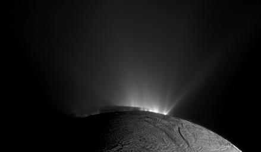

Cassini discovered that geyser-like jets spew water vapor
A handful of worlds are thought to have liquid water oceans beneath their frozen shell, but Enceladus sprays its ocean out into space. Enceladus also has the whitest, most reflective surface in the solar system. The moon creates a ring of its own as it orbits Saturn—its spray of icy particles spreads out into the space around its orbit, circling the planet to form Saturn’s E ring.